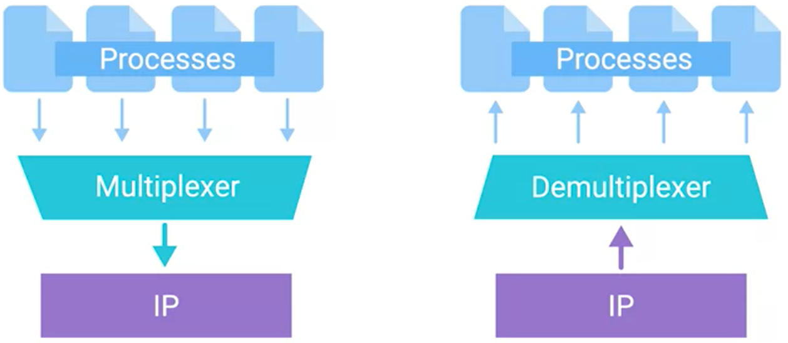

Transport layer allows traffic to be directed to specific network applications.
the t-layer has the uniqe ability to multiplex and de-multiplex

multiplexing - take data from serval sources and deliver it to one place
demultiplexing - taking data from one place and delivering it to serval different places
the transport layer handles the de/multiplexing through PORTs
PORT is a 16-bit number that's used to direct traffic to specific services running on a networked computer.
Different network services run while listening on specific ports for incoming requests.
ports allow multiplexing!